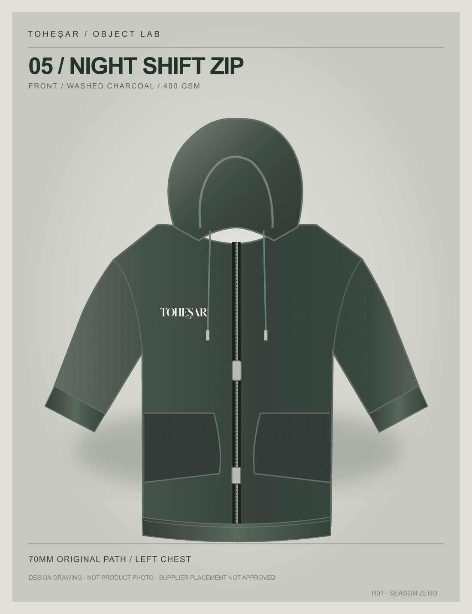
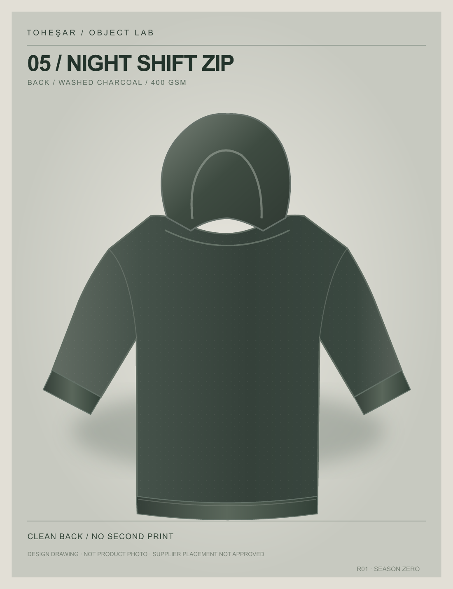

OBJECT LAB / 05 / DRAFT
OBJECT LAB / 05 / DRAFTA NEW CHAPTER / SEASON ZERO
NIGHT
SHIFT
ZIP.
Material over graphics. A substantial, washed two-way zip hoodie with just one quiet, untouched original mark. A new prototype direction beyond the first tee.


FABRIC AS THE IDENTITYThe texture does
The texture does
the talking.
The candidate blank uses washed 400 g/m² terry with a two-way metal zipper and drop shoulders. The back is intentionally plain. The 70mm ivory wordmark is source-locked but still pending the maker's physical placement approval.
- PRODUCT
- 05 / NIGHT SHIFT ZIP
- BODY
- 400 GSM / TERRY
- FINISH
- PIGMENT / WASHED
- COLOR
- CHARCOAL
- DETAIL
- TWO-WAY ZIP
- ART
- 70 MM / ORIGINAL PATH
- PRICE
- 1-PIECE QUOTE PENDING
- STATUS
- PREPRODUCTION STUDY